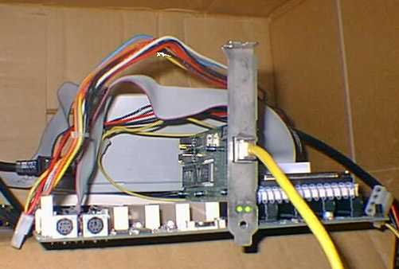
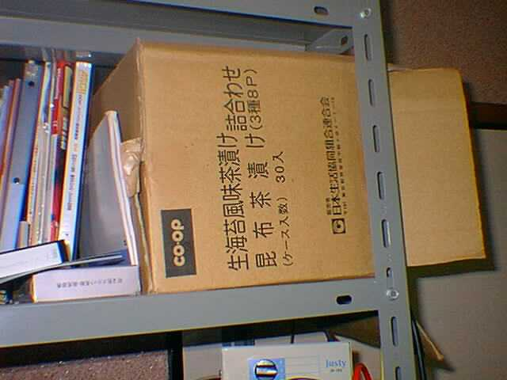

Linux実験用マシン(Soprano)
| CPU Pentium/100 |
| Mother Board Intel Advaned/ZV |
| Memory 32MB(8MB-EDO-SIMM×4) |
| HDD EIDE 1.6GB(DDLA-21620) |
| NIC ME2000Compatible |
| OS Plamo-Linux1.3.0 |
| Case ダンボール箱 |
| 電源 メーカー不詳 |
うちのマシンの付け方なんですが、一応音楽に関係するもの、となっています。マシンのネーミングセンスがなってないと、友人からたしなめられまして、「じゃあ、サーバーがBASEで、クライアントがMelodyならどうだ？」と聞いたら「それでいい」ということになったので、以来そうなっています。
|

Sopranoの外？観
右側のISAに乗っかってるのがハードディスク。壊れたLet'sNoteから取り出した。奥に見えるのが電源なんとヒートシンクとＳＩＭＭの上に乗っかってる
|
さて、このSopranoなんですが、ごらんのとおり箱がありません。Linuxサーバーの実験機として作ったマシンなので、FDD、CD-ROM、キーボード、VGAカードなどは外してしまいました。telnetで入れば設定は出来ますからね。でもご覧のとおりちゃんと動いています。職業柄Linuxを無視することもできず、サーバーの設定の練習用として作りました。動いているサービスは、
- ftp
- apache
- bind4.9.7
- samba
- telnet
など。apacheを動かしているのは、当然このページの実験環境を作るためなのですが、まだ、実験をする余力がありません。まあ、おいおいやっていきましょう。
このマシンを作った最大の収穫はviの使い方を覚えたことでしょう。でも、Plamo-Linuxに付いてたｖｉってカーソルキーが使えるんですよね。
まあ、どうして箱がないのかといえば、このマザーちょっと特殊なマザーでして、普通のＡＴケースに入らないんですよ。電源はジャンクで２０００円かそこらで売ってたものです。シャレで買ってみたら動いてしまったので、そのまま使っています。
|

外観
こっちが本当の外観（マジ）。いろんな意味でいかにも自作マシンというマシンだと思う
|
ＰＣ紹介に戻る
|